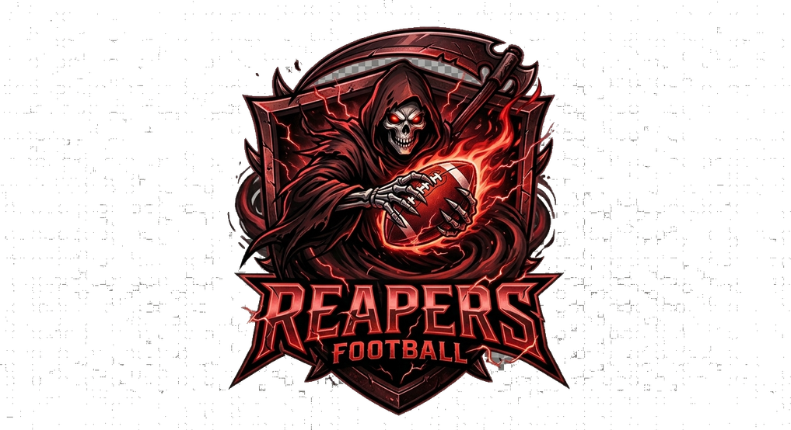

Loading…
⟳
Rotate your device
landscape mode
Install 7-on-7 Football
Add it to your home screen for fullscreen, app-like play.
Install
Not now
TKL
0
CAT
0
INT
0
DEBUG MODE
×
Force Scuffle
Throw to WR
🥋 Contact Lab
Difficulty: PRO
Save
Copy values
Reset to defaults
Free Cam: OFF
drag rotate · wheel/pinch zoom · shift/2-finger pan
Auto-rotate: off
Follow ball: off
⏪ −5
Step ▶
+5 ⏩
📷
Save
Load
Delete
A/B compare — Set, then flip:
Set A
Set B
▶ A
▶ B
LOS
-30
Down
1
To go
30
Apply & line up
Copy report
Reset stats
⚙
OFF
0
1:30
1ST
1st & 30
:15
0
DEF
Tap SNAP to start the play
INSTANT REPLAY
CONTINUE ▸
🎥 MANUAL CAM
❚❚
drag rotate · pinch/scroll zoom · scrub timeline
⟲ REPLAY
BREAK THE TACKLE!
TAP! TAP! TAP!
OFFENSE
CHOOSE YOUR PLAY
‹
›
SNAP
TURBO
AGGRESSIVE
POSSESSION
RAC
HIGH HIT
WRAP
LOW HIT
⛶
🔊
▦ PLAY ART
↺ AUDIBLE
SKIP QTR ⏭
SIM GAME ⏭⏭
❚❚